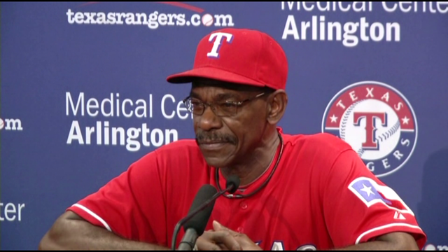
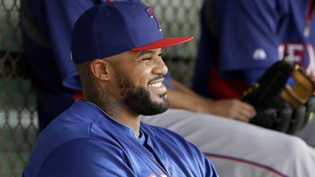
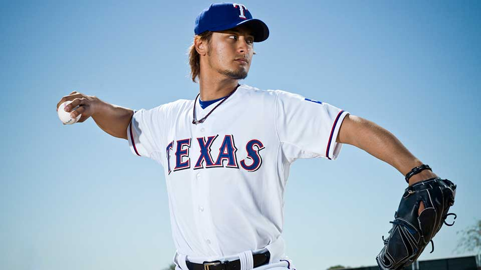

TOP STORIES
Washington Extended Until 2015
 view moreThe Rangers announced Monday that Washington has been given a one-year contract extension through 2015. Washington's contract was set to expire after this upcoming season but Daniels was ready to continue what he calls a "partnership" that is entering its eighth season.
"We feel as strongly as we ever have about Wash and we expect that to continue for a long time," Daniels said at a late-afternoon press conference Monday. "He's a big part of who we are and what we are all about and is everything you would want in a leader."
Washington has been the Rangers manager since 2007 with a record of 611-524 and a winning percentage of .538. It's the most wins and highest winning percentage of any Rangers manager in history. It is also the fourth-most wins by a Major League manager since 2007.
Fielder works on defense
 view moreRangers first baseman Prince Fielder had his first defensive one-on-one session with manager Ron Washington on Monday. It won't be his last.
"I just want to get better at everything and I want to get as much information as I can get," Fielder said.
Fielder has never rated high in any of the metrics that rate defensive play. But Washington has always taken great pride in working with infielders on their defense. The lesson Monday was about being better and digging throws out of the dirt.
"It's about getting lower with the body and trusting your technique," Washington said. "I was showing him some techniques he really wasn't onto before. But the last 15, 20 balls came together the way we wanted it to. Bend the knees and get the body down. At the end, you could see how flexible he is. We want to make sure we use that flexibility."
Darvish Opening Day starter
 view moreWashington had already said that last month at FanFest, but he told Darvish in a short meeting on Tuesday morning.
"Yu is the kind of guy that doesn't show a lot of emotion, but he was excited," Washington said. "He said he would work his tail off to represent us well and do the job."
There was little suspense over who would be the Opening Day starter, especially considering Washington did not consider anybody else. Darvish was 13-9 with a 2.83 ERA and a league-leading 277 strikeouts last season. The righty finished second in the American League Cy Young Award voting.
Washington said being the Opening Day starter is more than pitching the first game. It also defines who is the No. 1 pitcher on the staff and what is expected of him.
"I think that's exactly what the message says," Washington said. "There's no doubt he knows he's our horse."